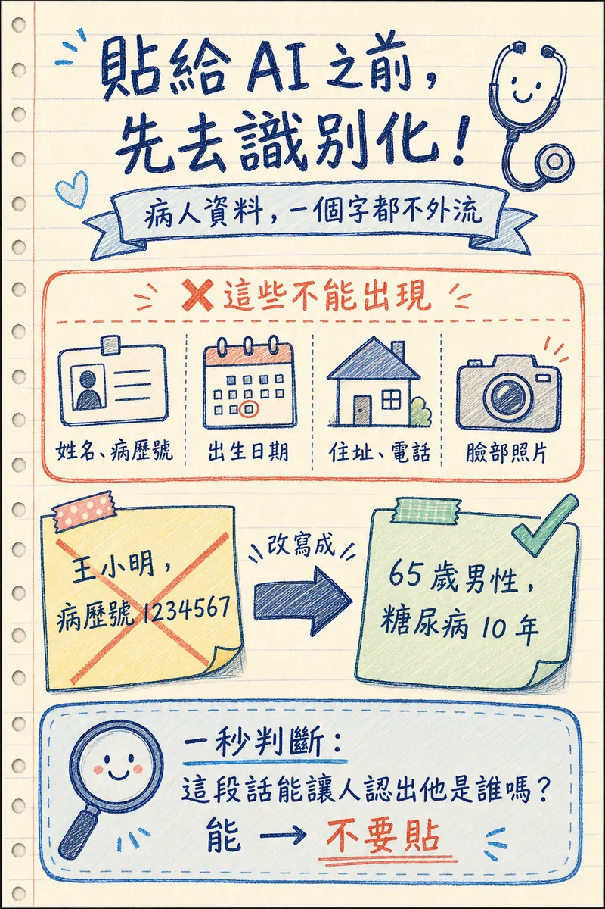

- 這頁教什麼：教病人隱私去識別化的判斷方式與實作範例、AI 幻覺的風險、過度依賴與輸入安全、ChatGPT／Claude／Gemini 免費版的資料使用政策、使用 AI 產出內容時的責任界線，以及 AI 深偽「名醫」詐騙的辨識與應對；並整理衛福部《醫療機構應用生成式人工智慧指引》當中直接規範個人使用行為的條文，與 2026 年新上路的《健保資料管理條例》、《人工智慧基本法》。
- 適合誰：所有會在工作中使用 AI 的醫療人員，本工作坊的必修課，建議在 Part 2 — AI 文字應用 之後、正式動手產出衛教或文書內容之前讀完。
- 注意：動手前先用 3 秒安全口訣自我檢查 —「有沒有病人資料？會不會給病人看？我能不能負責？」。
為什麼這是必修
醫療工作有兩個一般辦公室場景沒有的特殊性：你手上的資料是病人的隱私，你講出去的話有專業責任。這兩件事讓「隨手把資料貼進 AI」這個動作，風險比在其他行業高出很多。
這堂課不是要嚇你不敢用 AI，而是要讓你安全地用。學完這章，你會知道哪些資訊不能貼、AI 講錯話時怎麼抓出來、免費工具的資料政策長怎樣、出錯時責任在誰身上。之後每一堂創作應用課（文字、圖像、影片）都建立在這個基礎上。
姓名、病歷號、影像、對話紀錄——只要能連回特定病人，就是需要保護的資訊。
AI 產出的內容一旦你拿去用，署名、審核、後果都是你的，不是 AI 的。
AI 編個錯的旅遊景點沒關係；編錯藥物劑量或編出一篇不存在的文獻，代價完全不同等級。
衛福部指引怎麼說
衛生福利部於 115 年 5 月 29 日以衛部醫字第 1151663164 號函頒布《醫療機構應用生成式人工智慧指引》，這是目前國內最直接規範醫療場域使用生成式 AI 的官方文件。
閱讀時要先掌握兩個前提，才不會誤解它的效力。第一，這份指引的對象是醫療機構，多數條文在談機構層級的導入程序，例如指派主責單位、完成資料保護評估、規範供應商契約、建立版本控制與稽核機制，這些是資訊室與醫療品質單位的職責。第二，指引屬行政指導性質，並非強制性規定，機構仍得依實際情況與相關法令採取適當措施。
不過其中有數條直接規範個別使用者的行為，那些就是這一頁其他章節的法規依據。
指引列出的六類風險
- 基礎模型風險 — 模型訓練階段就內嵌的系統性偏差，可能對特定疾病或族群產生判斷偏誤
- 資料來源風險 — 系統介接的知識庫或外部資料品質不一、時效過期，影響產出可信度
- 輸出結果風險 — 產出看似合理但實際錯誤的內容，也就是本頁幻覺一節談的問題
- 資安攻擊風險 — 提示詞注入、資料中毒、模型竊取與資料外洩
- 使用者依賴風險 — 過度信任 AI 導致臨床判斷能力退化
- 服務中斷風險 — 外部模型服務停止、版本更新造成輸出漂移、定價政策調整
其中輸出結果、資安攻擊、使用者依賴這三類，取決於使用者當下怎麼操作，不是機構買了什麼系統就能決定的，因此本頁各安排一節處理。其餘三類屬於機構在選型與維運階段的責任。
課堂練習與實際導入的界線
學員最常問的一題是：我在工作坊練習用 AI，是不是就要走完整套機構程序？指引對此有明確劃分。
指引第一章載明，個人研究、教育示範或僅限功能驗證之內部測試，可視情況參照本指引原則辦理；但是——
「若測試內容涉及真實病人資料或臨床作業流程，例如於門診或病房實際使用、系統與機構內資料介接，即屬生成式人工智慧系統導入之階段，仍建議依本指引相關規範執行。」
這條界線很實用：你在本工作坊做的練習、用假設情境產生的衛教圖文、拿公開演講錄音轉逐字稿，都落在教育示範的範圍。一旦你把同樣的工具接上真實病人資料或正式臨床流程，性質就變了——那不再是個人使用，而是機構導入，該走的評估、核准與監測程序一項都不能少。從練習跨到實際上線之前，先找單位的資訊室或醫療品質部門確認。
病人隱私與去識別化
這是本頁的核心。原則很簡單：任何會讓人猜到「這是誰」的資訊，都不該貼進 AI 對話框。
什麼算「可識別資訊」
- 直接識別 — 姓名、病歷號、身分證字號、電話、住址
- 間接識別 — 生日＋性別＋居住地區的組合、少見疾病＋小地區（例如「南投某鄉鎮唯一一位罕見疾病患者」）、特殊職業＋年齡＋科別
- 影像中的資訊 — 照片裡的臉、明顯刺青或胎記、病房門牌／床頭卡、X 光片上燒錄的姓名與病歷號
單一項目看起來無害，但組合起來就可能定位到特定病人——這是去識別化最容易失手的地方。
圖片類的處理本站有現成工具：圖片去識別化 可以直接在瀏覽器內框選塗黑截圖上的姓名與病歷號，檔案不上傳，遮完再交給 AI。
去識別化實作範例
王小明，78 歲男性，病歷號 A123456789，住台北市信義區，因肺癌合併肋膜積水於本院胸腔科就診，過去有糖尿病和乙型肝炎病史，太太陳美玲是主要照顧者。
一位高齡男性病患，因肺癌合併肋膜積水於胸腔科就診，同時有糖尿病與慢性病毒性肝炎病史，由配偶擔任主要照顧者。
拿掉的是姓名、病歷號、確切年齡、居住地區；保留的是臨床上有意義的資訊（診斷、共病、照顧者角色）。這樣 AI 還是能給出有用的回應，但已經無法回推到特定病人。
拿不準就不要貼
去識別化做得夠不夠，沒有 AI 幫你把關——責任在使用者，不在 AI。如果一個案例特殊到「怎麼改寫都還是看得出是誰」（例如全院唯一一例的罕見疾病），最安全的做法是完全不描述真實案例，改用假設情境或教科書上的典型案例。

2026 年新上路的相關法規
📅 資訊更新於 2026 年 10 月 — 施行細則與主管機關解釋持續公布，以全國法規資料庫與衛福部公告為準。
除了衛福部指引，今年有兩部法律直接影響醫療資料與 AI 的使用。個人使用者不必逐條研讀，但至少要知道它們存在、管的是什麼：
健保資料的目的外利用（學術研究、政策分析等）從此有明確法源。民眾取得退出權，可申請不讓自己的健保資料被用於特定目的外利用；禁止商業營利使用；未經核准擅自利用最高可處新台幣 1,000 萬元罰鍰。對臨床人員的意義：健保資料庫不是可以自行取用來餵 AI 的素材，研究用途一律要走申請程序，並尊重民眾退出的權利。
全國性的 AI 上位法，共 20 條，2025 年 12 月三讀、2026 年 1 月 14 日總統公布並即日施行。明定國科會為主管機關，確立隱私保護與資料治理、透明可解釋、公平不歧視等基本原則，並授權各目的事業主管機關依風險分級訂定所轄領域的管理規範。數位發展部已於 2026 年 7 月 7 日訂定《人工智慧風險分類框架》，作為各領域判斷 AI 應用風險高低的共同基準。衛福部的生成式 AI 指引可視為醫療領域的先行版本，醫療 AI 的規範會在這部法律與風險分類框架下逐步細化。
AI 幻覺
AI 會用非常流暢、非常有自信的語氣講錯話——這叫「幻覺」（hallucination）。它不是偶爾當機才會發生，而是語言模型的本質：它預測「聽起來合理的下一個字」，不是在資料庫裡查證。
可能給出過期指引、錯誤劑量單位換算，或混淆相似藥名。
最危險的一種——AI 會編出格式完全正確、但根本不存在的論文標題、作者、期刊、DOI。
盛行率、死亡率、有效率這類數字容易被「四捨五入到聽起來合理」，但未必有真實來源支持。
過度依賴與輸入安全
前一節談的是 AI 講錯話，這一節談兩件更難察覺的事：你太相信它，以及別人透過它影響你。衛福部指引把這兩項分別列為「使用者依賴風險」與「資安攻擊風險」，並明文要求機構的教育訓練必須涵蓋。
能力退化（deskilling）
指引指出，醫事人員可能因為對 AI 系統產生過度信任，而降低自主臨床判斷的審慎程度、忽略反常訊號，或將 AI 產出當作最終結論，長期下來造成臨床判斷能力退化，並在 AI 運作異常時無法有效回應。
看到 AI 的結論時，第一個反應是「應該對吧」，而不是「依據是什麼」。
AI 的說法跟你原本的判斷不同時，直接改成 AI 的版本，沒有再查一次原始資料。
工具當機或改版那天，你發現自己已經不太記得原本怎麼做這件事。
輸入安全（Prompting Safety）
指引把「惡意指令植入」列為機構應建立防護的風險，說明攻擊者可透過精心設計的輸入內容，操控系統產生非預期或有害的輸出，可能導致錯誤醫療決策或資訊洩露，發生原因包括外部攻擊、跨系統資料污染，以及內部誤用。
對個人使用者來說，最實際的一條是：你交給 AI 的檔案，內容本身也可能是指令。從網路下載的 PDF、別人寄來的文件，內文可以夾帶寫給 AI 看的文字。單純聊天問答風險有限，但當你使用會讀取檔案、能上網、能操作電腦的工具時，風險等級完全不同。
免費工具的資料使用
📅 資訊更新於 2026 年 7 月 — 各家政策會不定期調整，實際規則以官方公告和帳號內的設定畫面為準。
三家常用的免費 AI 工具，預設狀態下都可能把你的對話內容用於模型訓練，但都提供關閉選項：
免費版和付費個人版預設會用對話訓練模型。可在「設定 → 資料控制 → 改善模型（Improve the model for everyone）」關閉，關閉後套用到未來的新對話。
消費版（含免費版）預設會用於訓練，可在「設定 → 隱私設定」關閉；官方也提供 Incognito（隱身）對話模式，該次對話一律不用於訓練。
只要「Gemini Apps 活動紀錄」是開啟狀態，對話就可能被用來改善服務與訓練模型；關閉活動紀錄可以退出，但代價是不會保留對話歷史。
機構帳號 vs 個人帳號
如果你的醫院、診所有簽約採購的「企業版」或「機構版」AI 帳號，資料處理條款通常跟免費個人帳號不同（例如承諾不用於訓練、資料留在特定地區）。用機構帳號處理工作內容，比用個人免費帳號安全——但仍然要先去識別化，機構條款保護的是資料流向，不是你貼了什麼進去。
責任界線
記住一句話：AI 輔助，不等於 AI 決策。
- 署名的人負全責 — 不管衛教內容、病摘、社群文案是不是 AI 生成的，掛你名字發出去，內容正確性就是你的責任。
- 臨床決策不能外包給 AI — AI 可以幫你整理資訊、草擬文字、提供思考角度，但診斷、治療計畫、用藥決策這些事，決定權和責任都在你，不在工具。
- 對病人使用前，你有驗收義務 — 任何要給病人看、給病人聽的 AI 產出內容（衛教單張、對話腳本、影片旁白），發布前都要親自看過一遍，確認資訊正確、語氣合適、沒有幻覺內容。
法規怎麼界定這條線
上面三點不只是職業道德的提醒，衛福部指引把它們寫成了具體要求。
凡涉及臨床判斷、病人安全、病人溝通或醫療紀錄的使用情境，應由具相應專業資格且在其執業範圍內的醫事人員負最終確認、審核與責任。
以 AI 協助製作病歷文書時，醫事人員應遵守電子病歷製作規範確實審核與簽章。AI 草擬不減輕審核義務。
若系統主要功能涉及診斷、治療、緩解或直接預防人類疾病，應注意是否屬醫療器材、是否符合核准用途，必要時須向食品藥物管理署申請屬性判斷。
第三點對你的實際意義
一般聊天型 AI 工具都不是核准的醫療器材。因此拿它輔助整理資料、草擬文字、提供思考角度沒有問題，但不能把它的輸出當成診斷或治療依據。指引也要求非醫療器材的系統應透過設計或管理措施避免輸出超出預定用途，並僅在人為監督或專業確認下使用。
要讓病人知道的兩件事
指引以「資訊透明以促進信任」為題，規範了兩個需要主動告知病人的情境。這兩條在你製作 AI 衛教內容或使用語音工具時都會碰到。
- AI 直接與民眾對話時要揭露 — 以生成式 AI 系統直接和民眾對話互動的情境（例如衛教問答機器人、AI 語音客服），應主動揭露此係人工智慧系統運作，並提醒其輸出可能出現幻覺或錯誤、內容僅供參考，必要時應由醫事人員進一步確認。
- 錄音錄影要先告知，病人拒絕就停止 — 因使用 AI 系統而需在醫療照護過程中錄音、錄影時，應先以適當方式告知病人或家屬，說明必要性與用途限制；若病人或家屬明確拒絕，則應停止錄音、錄影。錄下的資料僅得用於所告知的目的範圍。
這個原則貫穿整個工作坊——Part 2 AI 文字應用寫的病摘草稿、Part 4 AI 圖像生成的衛教插圖，都要回到這裡的驗收標準：你是最後一道關卡，不是 AI。
深偽「名醫」詐騙
📅 資訊更新於 2026 年 9 月 — 詐騙手法與平台政策持續變動，以 165 反詐騙專線與各院公告為準。
前面幾節談的是你使用 AI 的風險，這一節反過來：別人用 AI 冒用你，或冒用你的醫院。生成式 AI 讓合成人臉、複製聲音的成本降到接近零，「AI 假醫師」影片已成為 2026 年醫療詐騙的主要形式之一。醫療人員是最直接的受害者，也是病人拿著影片最先詢問的對象。
已發生的樣態
國內已有醫學中心眼科教授的形象被合成進推銷保健品的影片，本人從未參與；國外 2026 年 8 月亦有心臟科醫師發現自己的臉與聲音被用來宣稱某種茶飲可治癒糖尿病。
影片宣稱某醫學中心「發現糖尿病成因、可用革命性療法治療」，被冒名的醫院均公開澄清從未進行相關研究。
完全由 AI 生成的「醫師」在影音平台講解疾病並導向購買連結，畫面有白袍、診間背景與院徽，外觀與真實醫師難以區分。
美國醫學會（AMA）於 2026 年發出警告，指出這類內容不只造成病人的金錢損失與延誤治療，更會侵蝕民眾對整體醫療體系的信任——當病人分不清哪位醫師是真的，最後連真醫師講的也不信。
三個判斷原則
當病人問「這位醫師說的是真的嗎」，或你在社群上看到疑似冒用的內容，用三個問題快速篩選：
- 是否有專業來源 — 講者是否查得到執業資訊？影片是否來自醫院、學會或本人經營的官方帳號？只在廣告或陌生帳號出現、查不到任何公開紀錄的「醫師」，先視為可疑。
- 是否有臨床證據 — 宣稱的療效有沒有可查證的研究、指引或仿單？「三天治好」「不用吃藥即可逆轉」這類說法，在正規醫療中幾乎不存在。
- 是否過度誇大並導向購買 — 「名醫推薦」「限時」「免手術」等字眼，加上結尾出現的購買連結或私訊引導，是詐騙影片最一致的特徵。真正的衛教內容不會在最後要求付費。
如果被冒用的是你或你的醫院
- 存證 — 截圖、錄影，記下影片網址、帳號名稱與發布時間；先存證再檢舉，內容下架後就無法補救。
- 通報 — 向平台檢舉（多數平台有「冒充他人」專項）、撥打 165 反詐騙專線，並通知醫院公關或法務單位，由機構統一發布澄清。
- 公開澄清 — 透過本人或醫院的官方管道說明「未參與、未推薦」，讓病人搜尋時能找到正確資訊。
- 提醒病人 — 門診遇到病人拿出這類影片時，除了說明內容不實，也告知「醫師不會在網路上推銷產品」這個原則，比逐支影片反駁更有效。
本工作坊 Part 4 與 Part 5 教的圖像與影片生成，正是這類詐騙使用的同一套技術。學會製作，也就更容易理解它們如何被濫用——這是把這一節放在安全課、而不是影片課的原因。
使用前檢查清單
3 秒安全口訣
「有沒有病人資料？會不會給病人看？我能不能負責？」— 記不住下面七題沒關係，先把這三問變成反射動作。這個口訣會在圖像、影片、語音轉文字等每個會碰到資料的課程頁再出現。
時間充裕時，把資料貼進 AI 或把 AI 產出用出去之前，花 30 秒問自己完整的 7 個問題：
- ☐ 這段內容含有可識別特定病人的資訊嗎？（姓名、病歷號、罕見疾病＋地區組合⋯⋯）
- ☐ AI 給的數字和文獻引用，我核對過原始來源了嗎？
- ☐ 這個用法符合我所屬機構的資訊安全政策嗎？
- ☐ 如果這份產出出了錯，責任算在誰身上？我準備好承擔了嗎？
- ☐ 我用的這個工具，資料使用政策我知道嗎（免費版／機構版、會不會被用來訓練）？
- ☐ 這個情境需要告知病人嗎？（AI 直接與病人對話、或在醫療照護過程中錄音錄影）
- ☐ 病人拿來問的「名醫影片」，我用三個原則（專業來源、臨床證據、是否導向購買）看過了嗎？
七個都打勾，才算準備好
這份清單不是要拖慢你的工作，而是把原本容易忽略的判斷，變成一個固定的、幾秒鐘就能跑完的習慣。養成習慣之後，你會發現大部分時候答案都是「沒問題」——但那少數「有問題」的時候，這份清單就是擋下事故的最後一道防線。